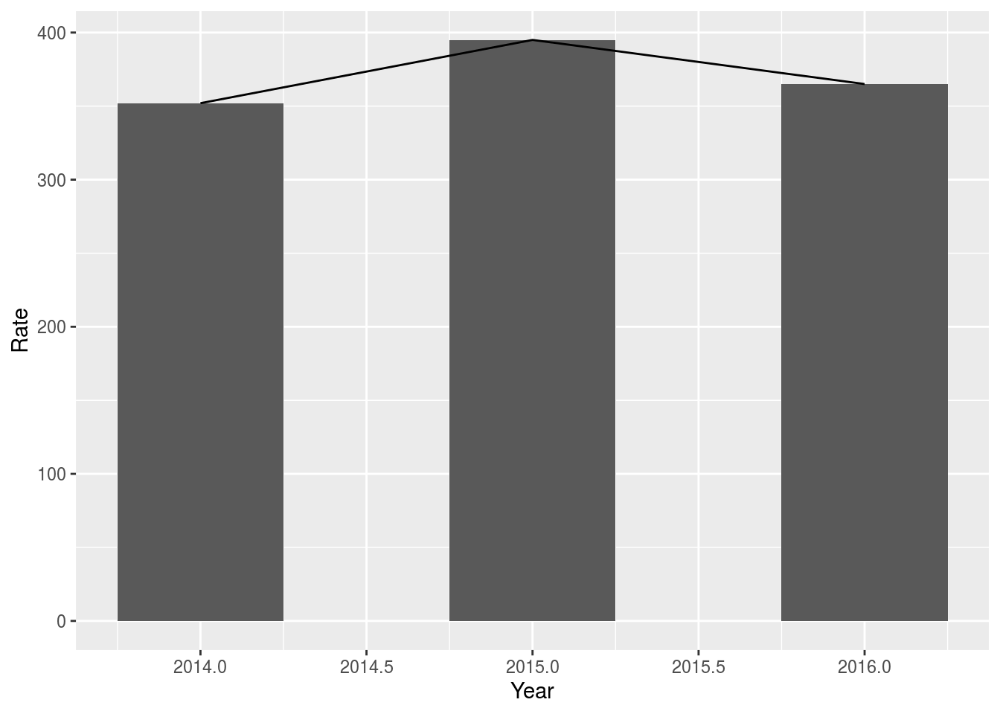

Part I. Abstraction
my abstract We use (???).
PART II. Introduction
The Toronto police service has released a set of data on the Toronto open data portal about neighbourhood crime rates. This dataset includes crime data through the year of 2014 and the year of 2019, and covers six kinds of crime and their year averages. It also calculated the crime rates per 100,000 people by neighbourhood based on 2016 Census population. Surely there are many reasons of committing crime both psychologically (for example: antisocial personality) and materially(out of money). However, in this project I want to specifically focus on the impact under changing government from 2014 and 2016. I creat a ggplot of the crime rate, and from this graph we can clearly see a rise/decrease of crime rates.
The reason of choosing 2014 is because this is the year right before Trudeau has became the president of Canada, and start from the year of 2016, he decided to open the gate, adopt a monetary refugee policy and accept more refugees came into Canada.
more people higher crime rate?
As I mentioned above, there are more affecting factors that influence the crime rate. A set of data within a short period time cannot be the conclusion of previous situation and also cannot predict the future status. In the future we should keep tracking all the factors and objectively evaluate the dataset.
Outline of the paper. Future work. Weaknesses.
#PART III. Data introduction introduce the scenario and study objectives types of data variable.
## Installing package into '/home/rstudio-user/R/x86_64-pc-linux-gnu-library/4.0'
## (as 'lib' is unspecified)
## Installing package into '/home/rstudio-user/R/x86_64-pc-linux-gnu-library/4.0'
## (as 'lib' is unspecified)##
## Attaching package: 'dplyr'## The following objects are masked from 'package:stats':
##
## filter, lag## The following objects are masked from 'package:base':
##
## intersect, setdiff, setequal, union## # A tibble: 1 x 10
## title id topics civic_issues excerpt dataset_category num_resources formats
## <chr> <chr> <chr> <chr> <chr> <chr> <int> <chr>
## 1 Neig… fc4d… <NA> <NA> <NA> <NA> 1 <NA>
## # … with 2 more variables: refresh_rate <chr>, last_refreshed <date>## Simple feature collection with 140 features and 61 fields
## geometry type: POLYGON
## dimension: XY
## bbox: xmin: -79.63923 ymin: 43.581 xmax: -79.1152 ymax: 43.85545
## CRS: EPSG:4326
## # A tibble: 140 x 62
## `_id` OBJECTID Neighbourhood Hood_ID Population Assault_2014 Assault_2015
## <int> <int> <chr> <chr> <int> <int> <int>
## 1 1 16 South Parkda… 085 21849 202 226
## 2 2 17 South Riverd… 070 27876 215 207
## 3 3 18 St.Andrew-Wi… 040 17812 53 41
## 4 4 19 Taylor-Massey 061 15683 127 92
## 5 5 20 Humber Summit 021 12416 76 89
## 6 6 21 Humbermede 022 15545 117 132
## 7 7 22 Centennial S… 133 13362 50 39
## 8 8 23 Church-Yonge… 075 31340 480 495
## 9 9 24 Clairlea-Bir… 120 26984 247 259
## 10 10 25 Cliffcrest 123 15935 79 97
## # … with 130 more rows, and 55 more variables: Assault_2016 <int>,
## # Assault_2017 <int>, Assault_2018 <int>, Assault_2019 <int>,
## # Assault_AVG <dbl>, Assault_CHG <dbl>, Assault_Rate_2019 <dbl>,
## # AutoTheft_2014 <int>, AutoTheft_2015 <int>, AutoTheft_2016 <int>,
## # AutoTheft_2017 <int>, AutoTheft_2018 <int>, AutoTheft_2019 <int>,
## # AutoTheft_AVG <dbl>, AutoTheft_CHG <dbl>, AutoTheft_Rate_2019 <dbl>,
## # BreakandEnter_2014 <int>, BreakandEnter_2015 <int>,
## # BreakandEnter_2016 <int>, BreakandEnter_2017 <int>,
## # BreakandEnter_2018 <int>, BreakandEnter_2019 <int>,
## # BreakandEnter_AVG <dbl>, BreakandEnter_CHG <dbl>,
## # BreakandEnter_Rate_2019 <dbl>, Homicide_2014 <int>, Homicide_2015 <int>,
## # Homicide_2016 <int>, Homicide_2017 <int>, Homicide_2018 <int>,
## # Homicide_2019 <int>, Homicide_AVG <dbl>, Homicide_CHG <dbl>,
## # Homicide_Rate_2019 <dbl>, Robbery_2014 <int>, Robbery_2015 <int>,
## # Robbery_2016 <int>, Robbery_2017 <int>, Robbery_2018 <int>,
## # Robbery_2019 <int>, Robbery_AVG <dbl>, Robbery_CHG <dbl>,
## # Robbery_Rate_2019 <dbl>, TheftOver_2014 <int>, TheftOver_2015 <int>,
## # TheftOver_2016 <int>, TheftOver_2017 <int>, TheftOver_2018 <int>,
## # TheftOver_2019 <int>, TheftOver_AVG <dbl>, TheftOver_CHG <dbl>,
## # TheftOver_Rate_2019 <dbl>, Shape__Area <dbl>, Shape__Length <dbl>,
## # geometry <POLYGON [°]>Including Plots
## ── Attaching packages ───────────────────────────────────── tidyverse 1.3.0 ──## ✓ ggplot2 3.3.2 ✓ purrr 0.3.4
## ✓ tibble 3.0.3 ✓ stringr 1.4.0
## ✓ tidyr 1.1.2 ✓ forcats 0.5.0
## ✓ readr 1.3.1## ── Conflicts ──────────────────────────────────────── tidyverse_conflicts() ──
## x dplyr::filter() masks stats::filter()
## x dplyr::lag() masks stats::lag()get package
## # A tibble: 1 x 10
## title id topics civic_issues excerpt dataset_category num_resources formats
## <chr> <chr> <chr> <chr> <chr> <chr> <int> <chr>
## 1 Neig… fc4d… <NA> <NA> <NA> <NA> 1 <NA>
## # … with 2 more variables: refresh_rate <chr>, last_refreshed <date>get all resources for this package
identify datastore resources; by default, Toronto Open Data sets datastore resource format to CSV for non-geospatial and GeoJSON for geospatial resources
load the first datastore resource as a sample
## Simple feature collection with 140 features and 61 fields
## geometry type: POLYGON
## dimension: XY
## bbox: xmin: -79.63923 ymin: 43.581 xmax: -79.1152 ymax: 43.85545
## CRS: EPSG:4326
## # A tibble: 140 x 62
## `_id` OBJECTID Neighbourhood Hood_ID Population Assault_2014 Assault_2015
## <int> <int> <chr> <chr> <int> <int> <int>
## 1 1 16 South Parkda… 085 21849 202 226
## 2 2 17 South Riverd… 070 27876 215 207
## 3 3 18 St.Andrew-Wi… 040 17812 53 41
## 4 4 19 Taylor-Massey 061 15683 127 92
## 5 5 20 Humber Summit 021 12416 76 89
## 6 6 21 Humbermede 022 15545 117 132
## 7 7 22 Centennial S… 133 13362 50 39
## 8 8 23 Church-Yonge… 075 31340 480 495
## 9 9 24 Clairlea-Bir… 120 26984 247 259
## 10 10 25 Cliffcrest 123 15935 79 97
## # … with 130 more rows, and 55 more variables: Assault_2016 <int>,
## # Assault_2017 <int>, Assault_2018 <int>, Assault_2019 <int>,
## # Assault_AVG <dbl>, Assault_CHG <dbl>, Assault_Rate_2019 <dbl>,
## # AutoTheft_2014 <int>, AutoTheft_2015 <int>, AutoTheft_2016 <int>,
## # AutoTheft_2017 <int>, AutoTheft_2018 <int>, AutoTheft_2019 <int>,
## # AutoTheft_AVG <dbl>, AutoTheft_CHG <dbl>, AutoTheft_Rate_2019 <dbl>,
## # BreakandEnter_2014 <int>, BreakandEnter_2015 <int>,
## # BreakandEnter_2016 <int>, BreakandEnter_2017 <int>,
## # BreakandEnter_2018 <int>, BreakandEnter_2019 <int>,
## # BreakandEnter_AVG <dbl>, BreakandEnter_CHG <dbl>,
## # BreakandEnter_Rate_2019 <dbl>, Homicide_2014 <int>, Homicide_2015 <int>,
## # Homicide_2016 <int>, Homicide_2017 <int>, Homicide_2018 <int>,
## # Homicide_2019 <int>, Homicide_AVG <dbl>, Homicide_CHG <dbl>,
## # Homicide_Rate_2019 <dbl>, Robbery_2014 <int>, Robbery_2015 <int>,
## # Robbery_2016 <int>, Robbery_2017 <int>, Robbery_2018 <int>,
## # Robbery_2019 <int>, Robbery_AVG <dbl>, Robbery_CHG <dbl>,
## # Robbery_Rate_2019 <dbl>, TheftOver_2014 <int>, TheftOver_2015 <int>,
## # TheftOver_2016 <int>, TheftOver_2017 <int>, TheftOver_2018 <int>,
## # TheftOver_2019 <int>, TheftOver_AVG <dbl>, TheftOver_CHG <dbl>,
## # TheftOver_Rate_2019 <dbl>, Shape__Area <dbl>, Shape__Length <dbl>,
## # geometry <POLYGON [°]>## Simple feature collection with 140 features and 61 fields
## geometry type: POLYGON
## dimension: XY
## bbox: xmin: -79.63923 ymin: 43.581 xmax: -79.1152 ymax: 43.85545
## CRS: EPSG:4326
## # A tibble: 140 x 62
## `_id` OBJECTID Neighbourhood Hood_ID Population Assault_2014 Assault_2015
## <int> <int> <chr> <chr> <int> <int> <int>
## 1 1 16 South Parkda… 085 21849 202 226
## 2 2 17 South Riverd… 070 27876 215 207
## 3 3 18 St.Andrew-Wi… 040 17812 53 41
## 4 4 19 Taylor-Massey 061 15683 127 92
## 5 5 20 Humber Summit 021 12416 76 89
## 6 6 21 Humbermede 022 15545 117 132
## 7 7 22 Centennial S… 133 13362 50 39
## 8 8 23 Church-Yonge… 075 31340 480 495
## 9 9 24 Clairlea-Bir… 120 26984 247 259
## 10 10 25 Cliffcrest 123 15935 79 97
## # … with 130 more rows, and 55 more variables: Assault_2016 <int>,
## # Assault_2017 <int>, Assault_2018 <int>, Assault_2019 <int>,
## # Assault_AVG <dbl>, Assault_CHG <dbl>, Assault_Rate_2019 <dbl>,
## # AutoTheft_2014 <int>, AutoTheft_2015 <int>, AutoTheft_2016 <int>,
## # AutoTheft_2017 <int>, AutoTheft_2018 <int>, AutoTheft_2019 <int>,
## # AutoTheft_AVG <dbl>, AutoTheft_CHG <dbl>, AutoTheft_Rate_2019 <dbl>,
## # BreakandEnter_2014 <int>, BreakandEnter_2015 <int>,
## # BreakandEnter_2016 <int>, BreakandEnter_2017 <int>,
## # BreakandEnter_2018 <int>, BreakandEnter_2019 <int>,
## # BreakandEnter_AVG <dbl>, BreakandEnter_CHG <dbl>,
## # BreakandEnter_Rate_2019 <dbl>, Homicide_2014 <int>, Homicide_2015 <int>,
## # Homicide_2016 <int>, Homicide_2017 <int>, Homicide_2018 <int>,
## # Homicide_2019 <int>, Homicide_AVG <dbl>, Homicide_CHG <dbl>,
## # Homicide_Rate_2019 <dbl>, Robbery_2014 <int>, Robbery_2015 <int>,
## # Robbery_2016 <int>, Robbery_2017 <int>, Robbery_2018 <int>,
## # Robbery_2019 <int>, Robbery_AVG <dbl>, Robbery_CHG <dbl>,
## # Robbery_Rate_2019 <dbl>, TheftOver_2014 <int>, TheftOver_2015 <int>,
## # TheftOver_2016 <int>, TheftOver_2017 <int>, TheftOver_2018 <int>,
## # TheftOver_2019 <int>, TheftOver_AVG <dbl>, TheftOver_CHG <dbl>,
## # TheftOver_Rate_2019 <dbl>, Shape__Area <dbl>, Shape__Length <dbl>,
## # geometry <POLYGON [°]>## Rows: 140
## Columns: 62
## $ `_id` <int> 1, 2, 3, 4, 5, 6, 7, 8, 9, 10, 11, 12, 13, 14…
## $ OBJECTID <int> 16, 17, 18, 19, 20, 21, 22, 23, 24, 25, 26, 2…
## $ Neighbourhood <chr> "South Parkdale", "South Riverdale", "St.Andr…
## $ Hood_ID <chr> "085", "070", "040", "061", "021", "022", "13…
## $ Population <int> 21849, 27876, 17812, 15683, 12416, 15545, 133…
## $ Assault_2014 <int> 202, 215, 53, 127, 76, 117, 50, 480, 247, 79,…
## $ Assault_2015 <int> 226, 207, 41, 92, 89, 132, 39, 495, 259, 97, …
## $ Assault_2016 <int> 231, 236, 48, 97, 118, 114, 48, 543, 244, 106…
## $ Assault_2017 <int> 229, 243, 45, 107, 116, 157, 48, 694, 243, 11…
## $ Assault_2018 <int> 220, 304, 55, 123, 109, 119, 46, 766, 288, 13…
## $ Assault_2019 <int> 251, 261, 58, 122, 118, 161, 48, 879, 282, 13…
## $ Assault_AVG <dbl> 226.5, 244.3, 50.0, 111.3, 104.3, 133.3, 46.5…
## $ Assault_CHG <dbl> 0.14, -0.14, 0.05, -0.01, 0.08, 0.35, 0.04, 0…
## $ Assault_Rate_2019 <dbl> 1148.8, 936.3, 325.6, 777.9, 950.4, 1035.7, 3…
## $ AutoTheft_2014 <int> 13, 18, 15, 11, 66, 36, 8, 31, 42, 17, 8, 14,…
## $ AutoTheft_2015 <int> 20, 23, 25, 9, 42, 33, 7, 24, 29, 12, 7, 9, 1…
## $ AutoTheft_2016 <int> 23, 27, 10, 7, 62, 45, 5, 23, 44, 10, 4, 7, 5…
## $ AutoTheft_2017 <int> 19, 37, 15, 5, 83, 58, 8, 27, 40, 18, 12, 12,…
## $ AutoTheft_2018 <int> 17, 40, 21, 12, 106, 56, 10, 68, 46, 23, 8, 1…
## $ AutoTheft_2019 <int> 20, 40, 35, 12, 135, 68, 19, 54, 66, 19, 8, 1…
## $ AutoTheft_AVG <dbl> 18.7, 30.8, 20.2, 9.3, 82.3, 49.3, 9.5, 37.8,…
## $ AutoTheft_CHG <dbl> 0.18, 0.00, 0.67, 0.00, 0.27, 0.21, 0.90, -0.…
## $ AutoTheft_Rate_2019 <dbl> 91.5, 143.5, 196.5, 76.5, 1087.3, 437.4, 142.…
## $ BreakandEnter_2014 <int> 45, 89, 81, 31, 54, 35, 13, 141, 130, 41, 50,…
## $ BreakandEnter_2015 <int> 51, 98, 79, 71, 44, 35, 15, 152, 116, 58, 20,…
## $ BreakandEnter_2016 <int> 71, 148, 57, 43, 41, 24, 19, 145, 86, 57, 14,…
## $ BreakandEnter_2017 <int> 58, 94, 91, 27, 40, 21, 23, 199, 103, 36, 12,…
## $ BreakandEnter_2018 <int> 78, 91, 81, 41, 56, 44, 16, 191, 65, 51, 14, …
## $ BreakandEnter_2019 <int> 89, 133, 83, 63, 57, 61, 29, 303, 65, 46, 16,…
## $ BreakandEnter_AVG <dbl> 65.3, 108.8, 78.7, 46.0, 48.7, 36.7, 19.2, 18…
## $ BreakandEnter_CHG <dbl> 0.14, 0.46, 0.02, 0.54, 0.02, 0.39, 0.81, 0.5…
## $ BreakandEnter_Rate_2019 <dbl> 407.3, 477.1, 466.0, 401.7, 459.1, 392.4, 217…
## $ Homicide_2014 <int> 0, 1, 1, 0, 0, 0, 0, 1, 0, 0, 1, 0, 0, 1, 0, …
## $ Homicide_2015 <int> 0, 0, 0, 1, 1, 0, 0, 4, 2, 1, 0, 1, 0, 0, 0, …
## $ Homicide_2016 <int> 1, 3, 0, 1, 0, 1, 0, 3, 1, 0, 0, 0, 0, 0, 0, …
## $ Homicide_2017 <int> 0, 5, 2, 1, 2, 1, 1, 1, 0, 0, 0, 0, 0, 0, 1, …
## $ Homicide_2018 <int> 0, 2, 0, 0, 1, 0, 1, 2, 3, 1, 0, 0, 0, 0, 1, …
## $ Homicide_2019 <int> 1, 0, 0, 1, 3, 0, 0, 1, 1, 0, 0, 0, 0, 0, 0, …
## $ Homicide_AVG <dbl> 0.3, 1.8, 0.5, 0.7, 1.2, 0.3, 0.3, 2.0, 1.2, …
## $ Homicide_CHG <dbl> 1.00, -1.00, 0.00, 1.00, 2.00, 0.00, -1.00, -…
## $ Homicide_Rate_2019 <dbl> 4.6, 0.0, 0.0, 6.4, 24.2, 0.0, 0.0, 3.2, 3.7,…
## $ Robbery_2014 <int> 24, 64, 8, 24, 22, 28, 10, 122, 40, 28, 25, 1…
## $ Robbery_2015 <int> 35, 42, 5, 37, 23, 27, 4, 128, 44, 22, 22, 17…
## $ Robbery_2016 <int> 41, 49, 14, 16, 23, 24, 13, 114, 46, 24, 24, …
## $ Robbery_2017 <int> 30, 64, 0, 20, 27, 34, 11, 138, 51, 30, 20, 3…
## $ Robbery_2018 <int> 35, 40, 4, 16, 31, 29, 6, 169, 28, 14, 16, 21…
## $ Robbery_2019 <int> 33, 35, 12, 13, 28, 27, 1, 143, 37, 25, 13, 2…
## $ Robbery_AVG <dbl> 33.0, 49.0, 7.2, 21.0, 25.7, 28.2, 7.5, 135.7…
## $ Robbery_CHG <dbl> -0.06, -0.13, 2.00, -0.19, -0.10, -0.07, -0.8…
## $ Robbery_Rate_2019 <dbl> 151.0, 125.6, 67.4, 82.9, 225.5, 173.7, 7.5, …
## $ TheftOver_2014 <int> 6, 18, 10, 4, 15, 1, 1, 32, 4, 4, 9, 2, 1, 4,…
## $ TheftOver_2015 <int> 4, 16, 14, 3, 16, 9, 1, 16, 15, 5, 3, 4, 5, 2…
## $ TheftOver_2016 <int> 9, 22, 8, 5, 18, 1, 1, 40, 18, 3, 3, 2, 4, 4,…
## $ TheftOver_2017 <int> 10, 27, 7, 2, 18, 7, 4, 30, 7, 7, 4, 3, 1, 8,…
## $ TheftOver_2018 <int> 9, 24, 6, 4, 15, 10, 2, 43, 12, 3, 1, 5, 1, 6…
## $ TheftOver_2019 <int> 22, 21, 6, 3, 22, 8, 3, 42, 14, 3, 3, 6, 2, 8…
## $ TheftOver_AVG <dbl> 10.0, 21.3, 8.5, 3.5, 17.3, 6.0, 2.0, 33.8, 1…
## $ TheftOver_CHG <dbl> 1.44, -0.13, 0.00, -0.25, 0.47, -0.20, 0.50, …
## $ TheftOver_Rate_2019 <dbl> 100.7, 75.3, 33.7, 19.1, 177.2, 51.5, 22.5, 1…
## $ Shape__Area <dbl> 2286974, 10964574, 7299580, 1062970, 7966905,…
## $ Shape__Length <dbl> 10802.832, 43080.725, 13025.997, 5940.700, 12…
## $ geometry <POLYGON [°]> POLYGON ((-79.42774 43.6297..., POLYG…## Simple feature collection with 6 features and 61 fields
## geometry type: POLYGON
## dimension: XY
## bbox: xmin: -79.58517 ymin: 43.61273 xmax: -79.28772 ymax: 43.77269
## CRS: EPSG:4326
## # A tibble: 6 x 62
## `_id` OBJECTID Neighbourhood Hood_ID Population Assault_2014 Assault_2015
## <int> <int> <chr> <chr> <int> <int> <int>
## 1 1 16 South Parkda… 085 21849 202 226
## 2 2 17 South Riverd… 070 27876 215 207
## 3 3 18 St.Andrew-Wi… 040 17812 53 41
## 4 4 19 Taylor-Massey 061 15683 127 92
## 5 5 20 Humber Summit 021 12416 76 89
## 6 6 21 Humbermede 022 15545 117 132
## # … with 55 more variables: Assault_2016 <int>, Assault_2017 <int>,
## # Assault_2018 <int>, Assault_2019 <int>, Assault_AVG <dbl>,
## # Assault_CHG <dbl>, Assault_Rate_2019 <dbl>, AutoTheft_2014 <int>,
## # AutoTheft_2015 <int>, AutoTheft_2016 <int>, AutoTheft_2017 <int>,
## # AutoTheft_2018 <int>, AutoTheft_2019 <int>, AutoTheft_AVG <dbl>,
## # AutoTheft_CHG <dbl>, AutoTheft_Rate_2019 <dbl>, BreakandEnter_2014 <int>,
## # BreakandEnter_2015 <int>, BreakandEnter_2016 <int>,
## # BreakandEnter_2017 <int>, BreakandEnter_2018 <int>,
## # BreakandEnter_2019 <int>, BreakandEnter_AVG <dbl>, BreakandEnter_CHG <dbl>,
## # BreakandEnter_Rate_2019 <dbl>, Homicide_2014 <int>, Homicide_2015 <int>,
## # Homicide_2016 <int>, Homicide_2017 <int>, Homicide_2018 <int>,
## # Homicide_2019 <int>, Homicide_AVG <dbl>, Homicide_CHG <dbl>,
## # Homicide_Rate_2019 <dbl>, Robbery_2014 <int>, Robbery_2015 <int>,
## # Robbery_2016 <int>, Robbery_2017 <int>, Robbery_2018 <int>,
## # Robbery_2019 <int>, Robbery_AVG <dbl>, Robbery_CHG <dbl>,
## # Robbery_Rate_2019 <dbl>, TheftOver_2014 <int>, TheftOver_2015 <int>,
## # TheftOver_2016 <int>, TheftOver_2017 <int>, TheftOver_2018 <int>,
## # TheftOver_2019 <int>, TheftOver_AVG <dbl>, TheftOver_CHG <dbl>,
## # TheftOver_Rate_2019 <dbl>, Shape__Area <dbl>, Shape__Length <dbl>,
## # geometry <POLYGON [°]>## _id OBJECTID Neighbourhood Hood_ID
## Min. : 1.00 Min. : 1.00 Length:140 Length:140
## 1st Qu.: 35.75 1st Qu.: 35.75 Class :character Class :character
## Median : 70.50 Median : 70.50 Mode :character Mode :character
## Mean : 70.50 Mean : 70.50
## 3rd Qu.:105.25 3rd Qu.:105.25
## Max. :140.00 Max. :140.00
## Population Assault_2014 Assault_2015 Assault_2016
## Min. : 6577 Min. : 16.00 Min. : 12.00 Min. : 10.0
## 1st Qu.:12020 1st Qu.: 53.75 1st Qu.: 57.25 1st Qu.: 57.5
## Median :16750 Median : 85.00 Median : 92.00 Median : 97.0
## Mean :19511 Mean :117.35 Mean :126.89 Mean :132.2
## 3rd Qu.:23854 3rd Qu.:141.25 3rd Qu.:152.25 3rd Qu.:166.2
## Max. :65913 Max. :738.00 Max. :826.00 Max. :888.0
## Assault_2017 Assault_2018 Assault_2019 Assault_AVG
## Min. : 20.00 Min. : 15.00 Min. : 17.0 Min. : 18.50
## 1st Qu.: 58.75 1st Qu.: 58.75 1st Qu.: 62.0 1st Qu.: 59.42
## Median : 94.00 Median : 93.50 Median : 99.5 Median : 96.50
## Mean :134.61 Mean :138.94 Mean :145.9 Mean :132.65
## 3rd Qu.:159.50 3rd Qu.:167.50 3rd Qu.:172.0 3rd Qu.:160.20
## Max. :905.00 Max. :910.00 Max. :916.0 Max. :851.80
## Assault_CHG Assault_Rate_2019 AutoTheft_2014 AutoTheft_2015
## Min. :-0.40000 Min. : 161.1 Min. : 1.00 Min. : 0.00
## 1st Qu.:-0.04000 1st Qu.: 392.3 1st Qu.: 10.00 1st Qu.: 11.00
## Median : 0.05000 Median : 592.6 Median : 17.50 Median : 17.00
## Mean : 0.08707 Mean : 714.3 Mean : 24.84 Mean : 22.91
## 3rd Qu.: 0.19250 3rd Qu.: 875.7 3rd Qu.: 29.25 3rd Qu.: 26.25
## Max. : 1.00000 Max. :3550.8 Max. :305.00 Max. :261.00
## AutoTheft_2016 AutoTheft_2017 AutoTheft_2018 AutoTheft_2019
## Min. : 1.00 Min. : 0.00 Min. : 2.00 Min. : 3.00
## 1st Qu.: 9.00 1st Qu.: 10.00 1st Qu.: 13.00 1st Qu.: 15.75
## Median : 16.00 Median : 18.50 Median : 22.50 Median : 27.00
## Mean : 23.32 Mean : 25.16 Mean : 33.72 Mean : 37.04
## 3rd Qu.: 27.00 3rd Qu.: 29.50 3rd Qu.: 41.25 3rd Qu.: 42.00
## Max. :321.00 Max. :326.00 Max. :505.00 Max. :482.00
## AutoTheft_AVG AutoTheft_CHG AutoTheft_Rate_2019 BreakandEnter_2014
## Min. : 2.70 Min. :-0.6800 Min. : 26.1 Min. : 7.00
## 1st Qu.: 13.28 1st Qu.:-0.1725 1st Qu.: 102.8 1st Qu.: 30.00
## Median : 18.80 Median : 0.0850 Median : 147.2 Median : 40.50
## Mean : 27.84 Mean : 0.2241 Mean : 185.6 Mean : 51.28
## 3rd Qu.: 30.98 3rd Qu.: 0.4300 3rd Qu.: 199.2 3rd Qu.: 68.00
## Max. :366.70 Max. : 3.1100 Max. :1446.9 Max. :156.00
## BreakandEnter_2015 BreakandEnter_2016 BreakandEnter_2017 BreakandEnter_2018
## Min. : 11.00 Min. : 9.00 Min. : 8.00 Min. : 7.00
## 1st Qu.: 27.00 1st Qu.: 24.75 1st Qu.: 25.75 1st Qu.: 25.00
## Median : 39.50 Median : 38.00 Median : 39.00 Median : 40.50
## Mean : 49.29 Mean : 45.70 Mean : 49.16 Mean : 53.98
## 3rd Qu.: 66.00 3rd Qu.: 57.25 3rd Qu.: 62.25 3rd Qu.: 66.00
## Max. :185.00 Max. :212.00 Max. :261.00 Max. :334.00
## BreakandEnter_2019 BreakandEnter_AVG BreakandEnter_CHG BreakandEnter_Rate_2019
## Min. : 8.00 Min. : 10.50 Min. :-0.6000 Min. : 67.5
## 1st Qu.: 26.00 1st Qu.: 28.00 1st Qu.:-0.1550 1st Qu.: 173.6
## Median : 45.00 Median : 40.75 Median : 0.0850 Median : 258.6
## Mean : 59.90 Mean : 51.55 Mean : 0.1501 Mean : 305.6
## 3rd Qu.: 67.25 3rd Qu.: 64.45 3rd Qu.: 0.3825 3rd Qu.: 361.2
## Max. :336.00 Max. :247.30 Max. : 2.1300 Max. :1549.2
## Homicide_2014 Homicide_2015 Homicide_2016 Homicide_2017
## Min. :0.0000 Min. :0.0000 Min. :0.0000 Min. :0.0000
## 1st Qu.:0.0000 1st Qu.:0.0000 1st Qu.:0.0000 1st Qu.:0.0000
## Median :0.0000 Median :0.0000 Median :0.0000 Median :0.0000
## Mean :0.4143 Mean :0.4214 Mean :0.5357 Mean :0.4643
## 3rd Qu.:1.0000 3rd Qu.:1.0000 3rd Qu.:1.0000 3rd Qu.:1.0000
## Max. :3.0000 Max. :4.0000 Max. :6.0000 Max. :5.0000
## Homicide_2018 Homicide_2019 Homicide_AVG Homicide_CHG
## Min. : 0.0000 Min. :0.0000 Min. :0.0000 Min. :-1.00000
## 1st Qu.: 0.0000 1st Qu.:0.0000 1st Qu.:0.2000 1st Qu.:-0.50000
## Median : 0.0000 Median :0.0000 Median :0.3000 Median : 0.00000
## Mean : 0.6857 Mean :0.5571 Mean :0.5136 Mean : 0.07971
## 3rd Qu.: 1.0000 3rd Qu.:1.0000 3rd Qu.:0.7250 3rd Qu.: 0.00000
## Max. :10.0000 Max. :3.0000 Max. :2.5000 Max. : 3.00000
## Homicide_Rate_2019 Robbery_2014 Robbery_2015 Robbery_2016
## Min. : 0.000 Min. : 0.00 Min. : 1.00 Min. : 0.00
## 1st Qu.: 0.000 1st Qu.: 10.75 1st Qu.: 9.00 1st Qu.: 10.00
## Median : 0.000 Median : 18.00 Median : 17.50 Median : 18.50
## Mean : 2.987 Mean : 25.83 Mean : 24.75 Mean : 25.81
## 3rd Qu.: 5.725 3rd Qu.: 33.25 3rd Qu.: 35.00 3rd Qu.: 32.00
## Max. :24.200 Max. :122.00 Max. :128.00 Max. :129.00
## Robbery_2017 Robbery_2018 Robbery_2019 Robbery_AVG
## Min. : 0.00 Min. : 1.00 Min. : 1.00 Min. : 3.30
## 1st Qu.: 10.00 1st Qu.: 9.00 1st Qu.: 11.00 1st Qu.: 11.68
## Median : 20.00 Median : 18.00 Median : 16.00 Median : 20.10
## Mean : 27.89 Mean : 25.19 Mean : 24.41 Mean : 25.65
## 3rd Qu.: 34.25 3rd Qu.: 31.00 3rd Qu.: 30.25 3rd Qu.: 30.40
## Max. :138.00 Max. :169.00 Max. :143.00 Max. :135.70
## Robbery_CHG Robbery_Rate_2019 TheftOver_2014 TheftOver_2015
## Min. :-0.8300 Min. : 7.50 Min. : 0.000 Min. : 1.000
## 1st Qu.:-0.2225 1st Qu.: 70.35 1st Qu.: 2.000 1st Qu.: 3.000
## Median :-0.0500 Median :104.20 Median : 5.000 Median : 5.000
## Mean : 0.2852 Mean :122.81 Mean : 7.071 Mean : 7.329
## 3rd Qu.: 0.4625 3rd Qu.:148.57 3rd Qu.: 8.000 3rd Qu.: 8.000
## Max. :12.0000 Max. :668.10 Max. :54.000 Max. :58.000
## TheftOver_2016 TheftOver_2017 TheftOver_2018 TheftOver_2019
## Min. : 0.000 Min. : 0.000 Min. : 0.000 Min. : 0.000
## 1st Qu.: 2.000 1st Qu.: 3.000 1st Qu.: 3.000 1st Qu.: 3.000
## Median : 4.500 Median : 5.000 Median : 5.000 Median : 6.000
## Mean : 7.321 Mean : 8.314 Mean : 8.764 Mean : 9.679
## 3rd Qu.: 8.000 3rd Qu.:10.000 3rd Qu.:10.000 3rd Qu.:10.250
## Max. :59.000 Max. :58.000 Max. :59.000 Max. :73.000
## TheftOver_AVG TheftOver_CHG TheftOver_Rate_2019 Shape__Area
## Min. : 1.200 Min. :-1.0000 Min. : 0.00 Min. : 424197
## 1st Qu.: 3.500 1st Qu.:-0.2000 1st Qu.: 22.75 1st Qu.: 1861853
## Median : 5.200 Median : 0.1100 Median : 37.40 Median : 3290879
## Mean : 8.083 Mean : 0.3776 Mean : 47.13 Mean : 4589400
## 3rd Qu.: 8.350 3rd Qu.: 0.6700 3rd Qu.: 54.65 3rd Qu.: 5402335
## Max. :56.200 Max. : 4.0000 Max. :283.00 Max. :37534495
## Shape__Length geometry
## Min. : 2574 POLYGON :140
## 1st Qu.: 6372 epsg:4326 : 0
## Median : 8962 +proj=long...: 0
## Mean :10138
## 3rd Qu.:11900
## Max. :43081## Warning: position_dodge requires non-overlapping x intervals
Reference
Hadley Wickham, Jim Hester and Winston Chang (2020). devtools: Tools to Make Developing R Packages Easier. R package version 2.3.1. https://CRAN.R-project.org/package=devtools
JJ Allaire and Yihui Xie and Jonathan McPherson and Javier Luraschi and Kevin Ushey and Aron Atkins and Hadley Wickham and Joe Cheng and Winston Chang and Richard Iannone (2020). rmarkdown: Dynamic Documents for R. R package version 2.3. URL https://rmarkdown.rstudio.com.
R Core Team (2020). R: A language and environment for statistical computing. R Foundation for Statistical Computing, Vienna, Austria. URL https://www.R-project.org/.
Sharla Gelfand (2020). opendatatoronto: Access the City of Toronto Open Data Portal. R package version 0.1.3. https://CRAN.R-project.org/package=opendatatoronto